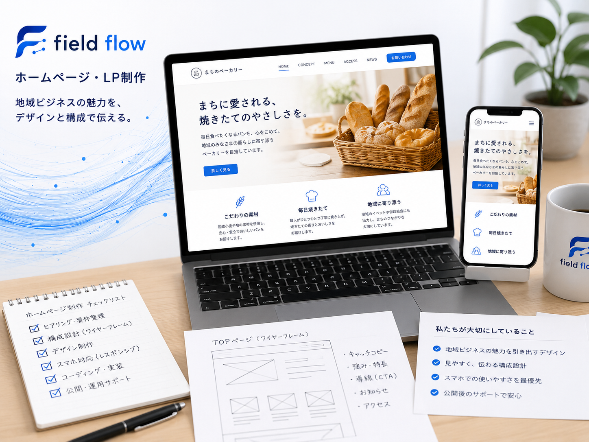
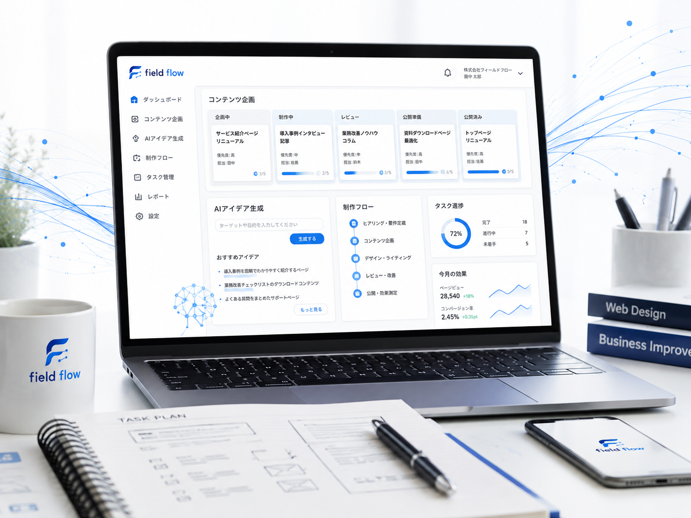
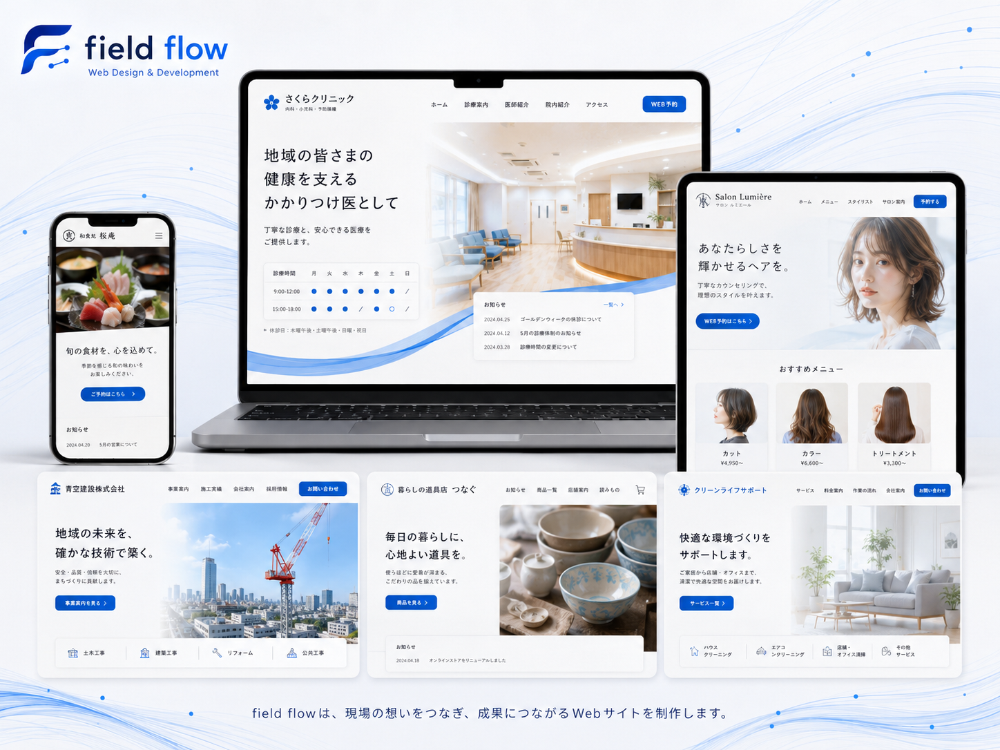
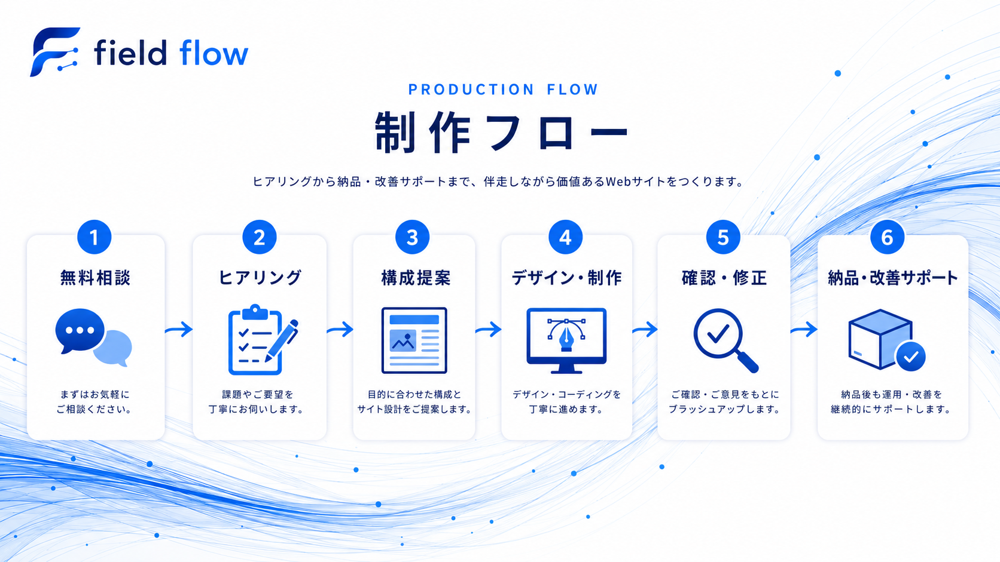

載せる内容がまとまらない
PROBLEM
HPや販促で、困っていませんか？
お店の良さが伝わりにくい
スマホで見づらい
予約・電話につながらない
SNSやチラシとつながっていない
大きな予算はかけづらい
情報整理から導線改善まで、一緒に整えます。今のHPを見せるだけでも大丈夫です。
SERVICE
必要なところから、使える形に整えます。
新規制作だけでなく、既存HPの改善や文章整理も対応します。現場で使いやすい導線まで一緒に整えます。

01
HP / LP制作
店舗やサービスの魅力を、1ページで分かりやすく伝える構成にします。
02
既存HP改善
古い印象、読みにくさ、問い合わせ導線の弱さを見直します。
03
構成・文章整理
お客様に伝える順番、見出し、説明文を整理して迷いを減らします。
04
スマホ・問い合わせ導線改善
電話、LINE、フォーム、予約ボタンまで自然に進める設計にします。

05
SNS・チラシ連携
Instagram、チラシ、店頭POPからHPへつながる導線を考えます。
06
AI活用のスピード制作
構成案・文章案・画像の方向性づくりにAIを使い、短期間でたたき台を作ります。
STRENGTH
field flowが大切にする4つの視点
現場目線
売場・接客・販促の流れを意識。実務で使えるHPにします。
改善提案型
どこを直すと伝わるか。何を目立たせるか。一緒に整理します。
AI活用
たたき台を早く作り、確認と改善に時間を使います。
相談しやすさ
専門用語は少なく。必要なことから、無理なく進めます。
PORTFOLIO
改善事例型ポートフォリオ
架空サイトを含む制作イメージです。課題から改善ポイントまで見える形で、提案力が伝わる構成にしています。

メニューと予約導線を整理
- 課題
- 営業時間・メニュー・予約先が分かりにくい
- 改善
- ファーストビューに強みと予約CTAを配置
スマホ予約に強いLPへ
- 課題
- 施術内容と料金の比較がしづらい
- 改善
- 悩み別導線とLINE予約ボタンを固定表示
雰囲気と初回導線を強化
- 課題
- SNSでは伝わるがHPで魅力が薄い
- 改善
- 写真を活かし、初回メニューを見やすく整理
チラシからHPへの受け皿作り
- 課題
- 販促物とHPの情報がつながっていない
- 改善
- キャンペーン・地図・問い合わせを同じ導線に統一
※ポートフォリオ用の架空事例を含みます。実案件では業種・目的に合わせて内容を調整します。
APPROACH
改善提案は、この流れで進めます。
現状確認
今のHP、SNS、チラシ、予約方法を確認します。
問題点整理
伝わりにくい箇所、迷いやすい導線を洗い出します。
構成改善
見せる順番、見出し、必要な情報を組み直します。
デザイン改善
読みやすさ、信頼感、写真の見せ方を整えます。
スマホ・CTA確認
スマホで押しやすく、問い合わせしやすい状態にします。
納品後の改善提案
公開後に次に直すべき点も分かるようにします。
PRICE
料金目安
今の料金は維持しつつ、目的に合わせて選びやすく整理しました。
LIGHT
ライト
まずは名刺代わりのHPがほしい方向け
30,000円〜
- 1ページ構成
- スマホ対応
- 基本情報掲載
- 問い合わせ導線
おすすめ
STANDARD
スタンダード
魅力と導線をしっかり整えたい方向け
50,000円〜
- LP型構成
- 文章作成サポート
- 画像方向性の提案
- 問い合わせ導線設計
- スマホ最適化
IMPROVE
改善サポート
既存HPを見直したい方向け
10,000円〜
- HP構成レビュー
- スマホ表示改善案
- CTA改善
- 文章改善
- SNS・チラシ連携案
内容・ページ数・素材の有無により変動します。まずは無料相談で必要な内容を整理します。
FLOW
制作の流れ
最初から完璧な原稿がなくても大丈夫です。必要な材料を一緒に整理しながら進めます。

01
無料相談
目的や困っていることを確認します。
02
情報整理
店舗・サービス内容、ターゲット、必要情報を整理します。
03
構成提案
伝える順番と問い合わせ導線を提案します。
04
制作
デザインと実装を進め、スマホ表示も確認します。
05
確認・修正
文章や見た目を確認し、必要な修正を行います。
06
納品・改善
納品後の改善ポイントも必要に応じて提案します。
FAQ
よくある質問
はい。何を載せるべきか、どんな順番で見せるべきかの整理から一緒に進められます。
はい。スマホ表示、文章、CTA、SNSやチラシとのつながりを見直す改善サポートに対応しています。
はい。文章案や画像の方向性も提案できます。手元にある写真を活かす前提でも進められます。
はい。小規模店舗・個人事業主向けに、分かりやすく相談しやすい進め方を想定しています。
今のHPの改善、新しいHPやLPの制作、スマホ表示、問い合わせ導線、SNSやチラシとのつなげ方などをご相談いただけます。まだ依頼内容が決まっていない段階でも大丈夫です。
無料相談では、現在の状況と課題を確認し、優先して改善するポイントや進め方を整理します。具体的なデザイン制作、文章作成、画像制作、サイト修正などの実作業は有料対応となります。
FREE CONSULTATION
無料で相談する
今のHPをもとに、改善点を一緒に整理できます。
HPがまだない場合も、内容整理から一緒に進めます。
今あるHP、SNS、チラシなどを確認しながら、分かりにくい部分や、問い合わせにつながりにくい原因を整理します。
相談後は、優先して直すポイント、今のHPを活かせるか、制作する場合の進め方と費用目安をご案内します。
無料相談で分かること
- 今のHPの改善ポイント
- スマホや問い合わせ導線の問題
- 今のHPを活かすか、作り直すか
- SNSやチラシとのつなげ方
- 制作する場合の進め方と費用目安
- ※無料相談は30分程度です。
- ※無理な営業や、その場での契約はありません。
- ※具体的な制作・修正作業は有料対応となります。